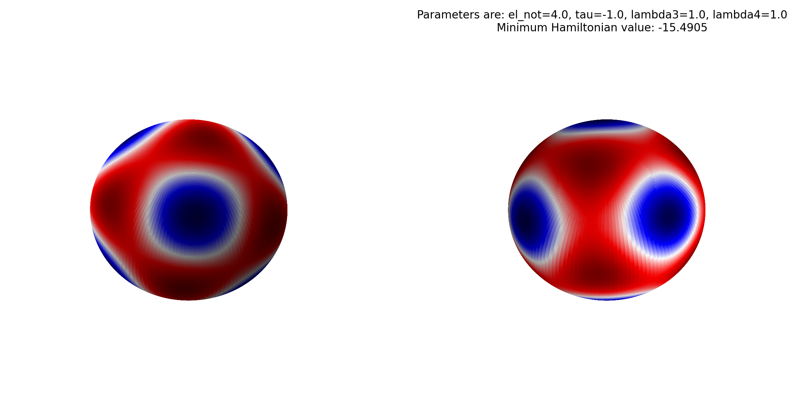

Pollen Phase Transition Paper
Implementation Guide
This document explains what the current repository implements, how the code works, how it differs from the original repository, and how to interpret the solver outputs, diagnostic text files, and generated PNG visualizations.
1. Repository Overview
The repository contains three main computational workflows:
-
Equilibrium phase-pattern solvers in
PhaseDiagramCalculations, implemented as four standalone C++ executables. - Python post-processing and visualization, which reconstructs the final spherical field from harmonic coefficients and saves a PNG.
- Conserved dynamics on the sphere, implemented in FiPy and rendered with Matplotlib.
The TraitReconstruction directory is separate from the C++ and Python solver pipeline.
It provides BayesTraits inputs rather than a directly coupled numerical model.
2. Mathematical Picture
The equilibrium solvers model a scalar field on the sphere by expanding it in spherical harmonics:
In the one-shell models, the sum is restricted to a single angular degree \( \ell = \ell_0 \). In the mixed-shell models, the field is built from two adjacent shells, typically \( \ell = \ell_0 \) and \( \ell = \ell_0 + 1 \).
Because the field is real, the negative-\(m\) modes are not stored independently. Instead, they are reconstructed through the usual reality constraint
The Hamiltonian is organized as a quadratic term, a cubic term, and a quartic term:
In the two-shell models, the quadratic penalty is modified to favor a preferred angular scale:
The cubic and quartic couplings are built from Gaunt coefficients, which are themselves computed from Wigner 3j symbols. In schematic form,
3. Current Implementation Architecture
3.1 Build System
The current repository builds from the root CMakeLists.txt. The build:
- requires C++11,
- finds Eigen automatically when possible,
- accepts a manual Eigen path through
POLLEN_EIGEN3_INCLUDE_DIR, - builds all four solver executables from one root entrypoint,
- and can optionally build a Wigner compatibility test.
3.2 Solver Layout
Each solver remains a large standalone main.cpp rather than a modular C++ library.
The code structure is therefore best understood as four configured numerical programs that
share some low-level infrastructure but otherwise embed most logic directly in the solver source.
3.3 Shared Wigner 3j Backend
The current repository includes an in-repo compatibility layer in
PhaseDiagramCalculations/Common/wigner_compat.cpp. It exposes the same API subset
that the older code expected:
wig_table_init(int, int)wig_temp_init(int)wig3jj(int, int, int, int, int, int)wig_temp_free()wig_table_free()
Internally, it checks selection rules early, caches log-factorials, and evaluates the summation
in a numerically stable form. This is what removed the hard dependency on wigxjpf.
3.4 Python Plotting Layer
The equilibrium plotting scripts read endcms.txt and parameters.txt,
rebuild the scalar field on a grid using spherical harmonics, normalize the field, and then render
a Matplotlib sphere with two viewpoints. The scripts now support both
scipy.special.sph_harm and the newer sph_harm_y interface.
3.5 Conserved-Dynamics Layer
The FiPy notebook is now paired with a reusable Matplotlib renderer. Instead of depending on
mayavi, the helper converts the FiPy mesh and field values to a displaced 3D point cloud
and saves or shows the result.
4. The Four Solver Families
4.1 GradientDescent_1l
This solver minimizes the Hamiltonian on a single shell \( \ell = \ell_{\mathrm{not}} \). In the current checked-in configuration:
- \( \ell_{\mathrm{not}} = 4 \)
- \( \tau = -1 \)
- \( \lambda_3 = 1 \)
- \( \lambda_4 = 1 \)
It uses a Numerical Recipes conjugate-gradient minimizer with an analytic derivative.
4.2 GradientDescent_2l
This solver minimizes a two-shell model using \( \ell = \ell_{\mathrm{not}} \) and \( \ell = \ell_{\mathrm{not}} + 1 \). In the current configuration:
- \( \ell_{\mathrm{not}} = 4 \)
- \( \kappa = 1 \)
- \( \tau = -1 \)
- \( \lambda_3 = 0 \)
- \( \lambda_4 = 1 \)
- \( \ell_{\mathrm{not}}^{\mathrm{pref}} = (2\ell_{\mathrm{not}} + 1)/2 = 4.5 \)
It still uses a gradient-based optimizer, but numerical differentiation is used for part of the derivative workflow.
4.3 SimulatedAnnealing_1l
This is the one-shell model optimized by an annealed simplex rather than direct gradient descent. Its current configuration is:
- \( \ell_{\mathrm{not}} = 4 \)
- \( \tau = -1 \)
- \( \lambda_3 = 0 \)
- \( \lambda_4 = 1 \)
4.4 SimulatedAnnealing_2l
This is the two-shell annealing variant. Its checked-in configuration is not parameter-matched to the two-shell gradient solver:
- \( \ell_0 = 3 \)
- \( \tau = -1 \)
- \( \lambda_3 = 0 \)
- \( \lambda_4 = 1 \)
- \( \ell_{\mathrm{not}}^{\mathrm{pref}} = 3.2 \)
5. What Changed Relative to the Original Repository
| Topic | Original Behavior | Current Behavior | Practical Effect |
|---|---|---|---|
| Build path | Per-folder Makefiles were the main route. | Root-level CMake is the supported entrypoint. | Windows and cross-platform builds are much more approachable. |
| Wigner backend | wigxjpf was required. |
In-repo compatibility layer replaces it. | One fewer external numerical dependency. |
| Conserved dynamics visualization | mayavi was required. |
Matplotlib renderer replaces it. | Modern Python environments work much more easily. |
| Equilibrium plotting | Older SciPy assumptions were baked in. | Scripts support both sph_harm and sph_harm_y. |
Plots work in current SciPy releases. |
| Testing | No comparable root test path. | Wigner backend test and optional smoke tests were added. | Better regression confidence. |
Run artifacts such as build/, run_gd1l/, and generated PNG files are not conceptual
design changes. They are example outputs and working directories produced by the current workflow.
6. Running the Current Workflow
6.1 Build
cmake -S . -B build cmake --build build --config Release
6.2 Run a Solver
Run the executable in the directory where you want the outputs to be written:
mkdir run_gd1l cd run_gd1l ..\build\Release\gradient_descent_1l.exe
6.3 Plot the Result
python PhaseDiagramCalculations\GradientDescent_1l\surface_pattern_1l.py run_gd1l\endcms.txt run_gd1l\parameters.txt --output run_gd1l\gd1l.png
For two-shell results, use surface_pattern_2l.py instead.
7. Understanding the Output Files
| File | Meaning | How to Use It |
|---|---|---|
startingcms.txt |
Initial coefficient vector before minimization. | Useful for debugging and reproducibility, not usually the final scientific result. |
cms.txt |
Trajectory-like or checkpoint output, depending on the solver. | Mainly diagnostic; not usually the plotting input. |
endcms.txt |
Final converged harmonic coefficients. | The main quantitative result and the normal plotting input. |
parameters.txt |
Run summary with parameter values, convergence metrics, eigenvalues, and final energy. | Use it to interpret the state and label plots. |
T_H.txt |
Hamiltonian values across the annealing schedule. | Optimization diagnostic for annealing runs. |
T_dH.txt |
Derivative-related annealing diagnostic. | Convergence tracking for the annealing workflow. |
time.txt |
Runtime summary, when written by the solver. | Performance reference rather than a direct scientific result. |
8. What the PNG Represents
The equilibrium PNG is not a raw solver dump. It is a visualization of the reconstructed field
obtained from endcms.txt. The plotting code evaluates
It then normalizes the result to a unit color scale and draws two viewpoints of the same sphere. The colors therefore communicate relative field structure, not an absolute physical unit.
More explicitly, the plotting workflow reconstructs \( \phi(\theta,\varphi) \), finds the sampled minimum
and maximum, rescales the field values to \([0,1]\), and then maps that normalized field to Matplotlib's
seismic colormap.
- blue means the field is near the lower end of that run's sampled values,
- red means the field is near the upper end of that run's sampled values,
- white or pale regions lie near the midpoint of the normalized range.
Two cautions matter. First, the normalization is done separately for each run, so "red" in one PNG is not guaranteed to mean the same absolute field value as "red" in another PNG. Second, white does not necessarily mean \( \phi = 0 \); it means the midpoint between the sampled minimum and maximum after normalization.
The safest physical interpretation is therefore that red and blue mark high and low regions of the reconstructed scalar field, while the most robust observables are the symmetry, connectivity, number, and arrangement of domains rather than the absolute shade intensity.
There is also a model-symmetry nuance: when \( \lambda_3 = 0 \), the system is often close to a \( \phi \to -\phi \) symmetry, so a red/blue-swapped rendering can correspond to the same physical pattern up to sign. When \( \lambda_3 \neq 0 \), that symmetry is generally broken more strongly, so the polarity of the field can matter more.

run_gd1l/gd1l.png.
The two panels are opposite views of the same reconstructed spherical pattern.
In the current example:
- the left view shows a central blue domain surrounded by red structure,
- the right view shows paired lateral blue domains,
- the symmetry and patch arrangement are the main visual observables.
9. Parameter Glossary
9.1 \( \ell_{\mathrm{not}} \)
The primary spherical-harmonic angular degree. In the one-shell model, it is the only active shell. In the two-shell gradient model, it is the lower of the two active shells.
9.2 \( \tau \)
The quadratic coefficient. It controls whether the zero-amplitude state is energetically favored or whether patterned states are driven to appear.
9.3 \( \lambda_3 \)
The cubic coupling strength. When \( \lambda_3 = 0 \), the cubic interaction is absent.
9.4 \( \lambda_4 \)
The quartic stabilization strength. This term keeps the model energetically bounded in the useful regime.
9.5 \( \kappa \)
The mixed-shell quadratic penalty strength. It controls how strongly the model is pulled toward a preferred angular scale.
9.6 \( \ell_{\mathrm{not}}^{\mathrm{pref}} \)
The preferred angular mode center in the mixed-shell model, written in the code as l_not.
9.7 Minimum Hamiltonian Value
The final energy of the converged state. Lower values are more favorable only when the runs share the same parameterization, active basis, and solver framing.
9.8 Hessian Eigenvalues
Local-curvature diagnostics of the final state. Positive eigenvalues suggest locally stable directions; near-zero or negative values can indicate flat directions, marginality, or instability.
10. Example Walkthrough: run_gd1l
The current repository already contains a concrete run in run_gd1l. Its summary reports:
- \( \ell_{\mathrm{not}} = 4 \)
- \( \tau = -1 \)
- \( \lambda_3 = 1 \)
- \( \lambda_4 = 1 \)
- starting energy \( \approx -0.900222 \)
- 10 iterations
- final derivative \( \approx 3.53 \times 10^{-5} \)
- final Hamiltonian \( \approx -15.4905 \)
That interpretation is:
- the optimizer found a state much lower in energy than the starting point,
- the small final derivative indicates good convergence,
- and the plotted domain structure in the PNG is therefore a plausible local minimum for this parameter set.
Because this is the one-shell \( \ell = 4 \) case, the stored coefficient file contains five explicit lines, corresponding to \( m = 0, 1, 2, 3, 4 \).
11. Best Mental Model for the Repository
The most accurate concise picture of the repository is:
- the C++ code solves for equilibrium spherical-harmonic coefficients,
- the text files record the converged coefficients and diagnostics,
- the Python scripts reconstruct and visualize the final field,
- the FiPy notebook is a separate time-dependent workflow,
- and the current repository modernizes the build and plotting stack without changing the overall scientific model structure.
Print-ready HTML generated for PDF export. Math is rendered with MathJax so the symbols, subscripts, superscripts, and equations appear cleanly in the exported document.